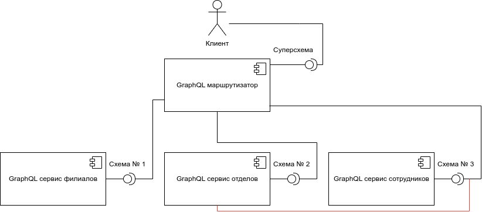

GraphQL как способ организации
back-end API
Андрей Накин
Компания «Рексофт»
Февраль 2023
Описание презентации
- Краткий обзор технологии GraphQL.
- Хорошо знакомые с GraphQL скорее всего не найдут ничего нового.
- Будут ссылки в виде QR-кодов.
- Картинок не будет :(
Содержание
- Какие проблемы решает GraphQL и как?
- GraphQL в многосервисном приложении.
- Проблемы GraphQL.
- Зрелость GraphQL и его реализаций.
Quick facts
- GraphQL — спецификация, включающая в себя язык запросов, язык описания схемы и др.
- Создана в Facebook в 2012.
- Первая версия спецификации выпущена в 2015, текущая — в 2021.
- С 2019 развитием занимается некоммерческая организация GraphQL Foundation.
- Спецификация выпущена под лицензией Open Web Foundation.
Назначение GraphQL
Решить проблемы типичного RESTful API.
Пример RESTful API
|
API филиалов
|
API отделов
|
API сотрудников
|
- API 100% нормализовано.
- На back-end оно реализуется при помощи простых операций, таких как
findByIdиfindAllByIdIn.
Задача
По известному ID сотрудника получить название его филиала.1. Решение «в лоб»
Выполнить 3 последовательных запроса к API.
Недостатки
- Утроенное время выполнения операции.
- Код на клиенте перестаёт быть тривиальным.
- Вероятность получения несогласованных данных.
2. Денормализация API
Можно добавить в данные сотрудника соответствующие поля:
GET employees/emp-1?have-dep-branch-data=true
{
"id": "emp-1",
"dep_id": "dep-1",
"family": "Обломов",
"given": "Илья",
"patronymic": "Ильич",
"photo": "/9j/4AAQSkZJRgABAQ...",
"dep_branch_id": "br-1",
"dep_branch_name": "Московский"
}
- А есть более общее решение?
3. Иерархические поля
Добавим информацию об отделе и филиале непосредственно в данные сотрудника:
GET employees/emp-1?have-dep=true&have-dep-branch=true
{
"id": "emp-1",
"dep": {
"dep_id": "dep-1",
"name": "Консалтинг",
"branch": {
"id": "br-1",
"name": "Московский"
}
},
"family": "Обломов",
"given": "Илья",
"patronymic": "Ильич",
"photo": "/9j/4AAQSkZJRgABAQ..."
}
Проблема эффективности
Наш запрос возвращает много ненужных данных, включая такие «тяжёлые» поля, как
photo.
- Избыточная нагрузка на сервер.
- Избыточная нагрузка на клиента.
- Избыточный трафик.
Параметры выборки
Добавим в запрос параметры, регулирующие выборку данных:
GET employees/emp-1?have-dep=true&have-dep-branch=true
&have-name=false&have-photo=false&have-dep-name=false
{
"id": "emp-1",
"dep": {
"dep_id": "dep-1",
"branch": {
"id": "br-1",
"name": "Московский"
}
}
}
Задача решена!
Но с ростом API начинают накапливаться другие проблемы...
Проблемы на клиенте
- API стало громоздким: необходимо помнить значительный объём конфигурационных параметров.
- При добавлении новых полей в API нужно их явно отключать. Или делать новые поля отключёнными по умолчанию.
Проблемы на сервере
- API стало громоздким: необходимо поддерживать значительный объём конфигурационных параметров.
- Реализация перестала быть тривиальной, помимо выборки данных добавилась логика их композиции.
Нужно общее решение
- Для клиента: иметь некий специализированный язык (DSL) и с его помощью указывать, какие данные должен возвращать запрос.
- Для сервера: иметь некий framework, который взял бы на себя обработку параметров запроса, декомпозицию выборки данных и композицию результатов запроса.
GraphQL
Как вариант такого решения.
GraphQL на клиенте
GraphQL вводит язык запросов (query language):
| Запрос (QL) | Ответ (JSON) |
|
|
- В параметрах запроса — ID сотрудника.
- А также иерархический список полей, которые необходимо вернуть.
GraphQL на сервере: фреймворк
GraphQL-фреймворк:
- Анализирует запрос.
- Разбивает его на отдельные простые операции по выборке одного или нескольких однотипных объектов.
- Производит композицию итогового результата из отдельных простых объектов.
GraphQL на сервере: разработчик
- Разработчик реализует специальные процедуры — резольверы, resolvers, которые возвращают единичные объекты или коллекции однотипных объектов.
- Резольверы реализуются, как правило, простыми операциями, такими как
findByIdиfindAllByIdIn.
Комбинация запросов...
... в одном обращении к серверу
query {
employee(id: "emp-1") {
id
departmentId
}
department(id: "dep-1") {
name
}
branch(id: "br-1") {
name
}
}
И так далее: в нашем распоряжении полноценный язык запросов.
Profit!
Практически с теми же трудозатратами мы получаем API с гораздо большими возможностями по выборке данных.
GraphQL и системный анализ
Проектирование API тоже упростилось.
- Проектировщик объявляет типы объектов и связи между ними.
- Комбинирование объектов в запросе — забота клиента API.
- Это касается только выборки данных! Изменение данных на сервере не сильно изменилось по сравнению с REST/SOAP.
Следствие
GraphQL хорошо работает в «классическом» web-приложении, когда 80-90% запросов — на чтение.
В некоторых случаях (например, какая-нибудь CRM-система) использование GraphQL не даёт никакой выгоды.
SDL — язык описания API
Спецификация GraphQL включает в себя
Это язык описания вашего API во всей его полноте.
В мире REST неким аналогом является спецификация OpenAPI.
SDL — язык описания API
Пример простейшей схемы.
type Employee { # Типы данных
id: ID!
name: String
friends: [Employee!] # Связи между типами
}
type Query { # Операции чтения данных
getEmployee(id: ID!): Employee
}
type Mutation { # Операции обновления данных
addEmployee(name: String): Employee
updateEmployee(id: ID!, name: String): Employee
deleteEmployee(id: ID!): ID!
}
Интроспекция
GraphQL включает в себя API по исследованию схемы со стороны клиентов:
| Запрос (QL) | Ответ (JSON) |
|
|
Документация в SDL
Схема может включать в себя документацию, которая является
"""
Тип описывает сотрудника.
Сотрудник имеет идентификатор и имя.
"""
type Employee {
"Идентификатор сотрудника."
id: ID!
"Имя сотрудника."
name: String
}
Метаданные в SDL
Схема может включать в себя метаданные посредством добавления в схему директив:
type Employee {
name: String
numOfLogins: Int @needRole(role: "ADMIN")
}
@needRole — пользовательская директива.
Версионность API
Вспомним, как это делается в REST:
https://myapi.io/v1/employees
- Клиент API явно указывает версию API в запросе.
- Сервер поддерживает множественные версии, кроме совсем устаревших.
Версионность в GraphQL
- Вместо набора фиксированных версий предлагается «continuous evolution».
- Изменения в API вносятся таким образом, чтобы не ломать обратную совместимость.
Continuous evolution I
Нельзя менять семантику и формат существующих элементов API.
В официальной документации это сформулировано как «always avoiding breaking changes».
Continuous evolution II
При добавлении в API новых элементов, существующие запросы не меняют поведения:
# В существующий тип...
type Employee {
firstName: String
# ... добавили новое поле
givenName: String
}
# На ранее созданный запрос новое поле не влияет
query {
employees {
firstName
}
}
Continuous evolution III
Устаревшие поля помечаются как deprecated и спустя какое-то время удаляются из схемы:
type Employee {
# Устаревшее, но пока не удалённое поле
firstName: String @deprecated(reason: "Use givenName")
# Новое поле
givenName: String
}
Клиенты API должны отслеживать deprecation.
GraphQL в многосервисных приложениях
Пример приложения
Клиент и три модуля с GraphQL API.
Проблемы
- Клиент хранит ссылки на все компоненты и их SDL-схемы и выбирает нужные в каждом отдельном запросе.
- Невозможно комбинировать запросы к разным API в одном обращении к back-end:
query { departments { id name } employees { id departmentId } # Нельзя, другое API! }
Добавим маршрутизатор
Маршрутизатор выступает как единая точка входа в API.
Уже лучше
- Клиент хранит только ссылку на маршрутизатор и совокупную SDL-схему.
- Теперь можно комбинировать запросы к разным API в одном обращении к back-end:
query { departments { id name } employees { id departmentId } # Можно! }
GraphQL-маршрутизатор
- Специализированное ПО, способное производить разбор GraphQL-запросов (обычный nginx не годится).
- Отправляет запросы нужным сервисам и объединяет их результаты в одно целое.
- Не должен вносить заметную задержку в запрос к back-end.
Всё ещё есть проблемы
- Так плохо, нет интеграции между API:
query { departments { id name } employees { id departmentId } } - А вот так хорошо:
query { departments { id name employees { # Хочется получить id # список сотрудников } # прямо в отделе } }
Добавим связь между сервисными модулями
Сервис отделов может обращаться непосредственно к сервису сотрудников.
Снова проблемы
- Увеличивается связность между модулями и их зависимость друг от друга.
- Увеличивается сложность модулей, в них появляется GraphQL-клиент и логика композиции данных.
Есть ли общее решение?.
API Federation
Интеграция нескольких поставщиков API.
Apollo API Federation v1
- Вводятся специальные SDL директивы: @key, @external и др.
- SDL-схемы сервисов модифицируются, чтобы обозначить связь между API.
- В сервисы добавляется поддержка federation-запросов (как правило, с помощью библиотеки).
- Сама связь реализуется в GraphQL-маршрутизаторе.
Пример API Federation
Модификация схемы сервиса отделов:
type Department @key(fields: "id") {
id: ID!
name: String!
}
Директива @key определяет главный ключ сущности Department.
Пример API Federation
Модификация схемы сервиса сотрудников:
type Employee {
id: ID!
}
type Department @key(fields: "id") {
id: ID! @external
employees: [Employee!]
}
Мы импортируем тип Department и добавляем в него новое поле employees.
Интересный эффект
- Сервис отделов не знает, что в его тип
Departmentдобавилось новое поле!
Можно добавлять функциональность к legacy-сервисам без модификации последних.
API Federation
Даёт возможность по-новому организовать API вашего приложения:
- API реализуется небольшими сервисными модулями.
- Добавляется разметка связей между API.
- Все эти детали скрыты от клиента, который имеет дело с одним совокупным API.
API Federation
Новые возможности по рефакторингу приложения.
API Federation
Новые возможности по рефакторингу приложения.
- «GraphQL Federation, или Как не выстрелить себе в ногу» (доклад на Highload++ Весна2021).
Проблемы GraphQL
...проистекают из его достоинств.
Complexity overhead
- Добавляет сложность в проект.
- Повышает требования к разработчикам.
Следствие: GraphQL может оказаться бесполезным для небольшого API с малым числом сценариев использования.
Performance overhead
Работа с GraphQL, в основном на стороне сервера, привносит некоторые накладные расходы как по CPU, так и по ОЗУ.
Проблема N+1
«Наивная» реализация резольверов в типичном GraphQL фреймворке приводит к проблеме N+1.
Решение: использовать шаблон проектирования DataLoader.
DataLoader
Ускорение работы с помощью простых приёмов:
- Отложенная загрузка отдельного объекта (вместо объекта возвращается его Future).
- Пакетная загрузка однотипных объектов.
- Опциональное кеширование ранее загруженных объектов.
Уязвимость к DDoS-атакам
- GraphQL по своей природе, в силу наличия QL уязвим к атакам.
- Язык запросов предоставляет клиенту очень широкие полномочия.
- Злонамеренный клиент может этим воспользоваться.
Пример DDoS атаки
Рассмотрим схему:
type User {
id: ID!
friends: [User!]!
}
type Query {
users: [User!]!
}
Пример DDoS атаки
Тогда следующий запрос...
query {
users {
friends {
friends {
friends {
... и так K раз
}
}
}
}
}
... должен вернуть NK объектов.
Ограничение уровня вложенности
Реализация GraphQL может ограничивать максимальный уровень вложенности объектов в запросе.
В целом это работает плохо:
- Некоторые идиомы QL требуют значительного уровня вложенности в GraphQL-запросе.
- Часто можно подобрать «тяжёлый» запрос, не требующий большой вложенности.
Ограничение сложности
Выглядит перспективнее вычислять и ограничивать вычислительную «сложность» запроса.
Но как это сделать? На уровне отдельного резольвера это невозможно в силу декомпозиции.
Оценить сложность запроса можно только в процессе его выполнения — нужна поддержка со стороны фреймворка.
Ограничение продолжительности
Возможно также ограничивать время работы каждого отдельного запроса.
Должна быть поддержка со стороны фреймворка, чтобы обеспечить корректное освобождение ресурсов, когда запрос принудительно останавливается.
GraphQL в публичном API
Если ваше API предполагает доступ со стороны неопределённого круга лиц, GraphQL может оказаться не лучшим выбором.
Объём усилий по защите API может обесценить пользу от использования GraphQL.
Зрелость
GraphQL — это спецификация.
Поэтому говоря о зрелости технологии надо разделять
- саму спецификацию GraphQL
- и её реализации на разных платформах.
Зрелость спецификации
В целом — production-ready.
Но некоторой функциональности не хватает.
И не устранены небольшие недоделки.
Нет выгрузки (uploading) файлов
Спецификация не рассматривает данный аспект.
Приходится использовать дополнительную точку входа или дополнительные компоненты (например, Minio).
Некоторые реализации (например, Netfix DSG) предлагают свои решения.
Нет namespaces
В объёмном API, особенно при использовании API Federation это требует внимательности от проектировщиков.
Input field deprecation
Нельзя пометить поле в input-типе или аргумент в запросе как @deprecated.
Выглядит как банальная недоделка, пропущенная по недоразумению.
Исправлено в черновике (working draft) спецификации GraphQL, которая на момент написания в стадии prerelease.
Отсутствует RBAC
- Отсутствуют стандартные механизмы разделения доступа на основе ролей пользователей, role-based access control.
- Есть разнообразные решения от независимых вендоров.
- Официальный сайт рекомендует делегировать авторизацию на уровень бизнес-логики.
Зрелость реализаций
- Существуют для всех популярных платформ.
- У них не всегда удовлетворительные стабильность, производительность и пр.
graphql-java
- Библиотека для Java, реализующая GraphQL сервер.
- Используется как reference implementation и в качестве основы для других GraphQL фреймворков.
spring-graphql
- GraphQL-фреймворк, часть Spring Framework.
- Плюсы: жизненный цикл и поддержка.
- Скудные возможности для интеграционных тестов (коллеги, поправьте, если я не прав).
- Не нашёл официально рекомендованного способа выполнять GraphQL queries в одной и той же транзакции.
Netflix dgs-framework
- GraphQL-фреймворк для Spring Boot.
- Поддержка выгрузки (uploading) файлов.
- Автогенерация DTO на основе SDL-схемы.
- Поддержка API Federation.
Apollo Kotlin
- GraphQL-клиент для Java/Kotlin.
- Может использоваться в Java back-end, Android, iOS/MacOS.
- Генерирует код обвязки (DTO и запросы) по SDL.
- Асинхронный I/O.
- Официально поддерживает только gradle.
federation-jvm
- Небольшая Java библиотека, добавляющая в GraphQL-сервер поддержку API Federation.
- Интегрируется с
spring-graphqlиdgs-framework.
Клиенты для Python
- Нет личного опыта.
- У коллег были проблемы с производительностью, возможно связанные с большим (более 100 кб) размером GraphQL схемы.
- Рекомендуем статью на Хабре (см. QR-код).
Apollo Router
- Реализация GraphQL-маршрутизатора от компании Apollo.
- Реализует спецификацию Apollo Federation v2.
- Написан на Rust.
- Отправляет телеметрию в Apollo, но это (если верить документации) отключаемо.
GraphQL API шлюзы

Спасибо за внимание!
Исходный код данной презентации доступен по адресу: